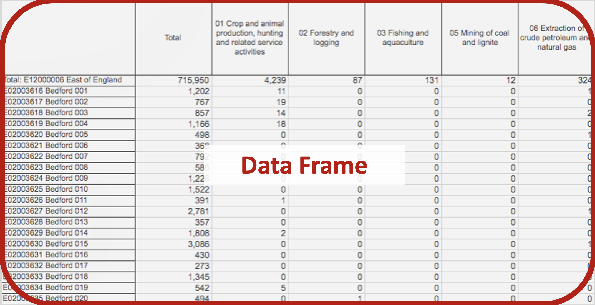

<class 'pandas.core.frame.DataFrame'>
['State', 'District', 'Subdistt', 'Town/Village', 'Ward', 'EB', 'Level', 'Name', 'TRU', 'No_HH', 'TOT_P', 'TOT_M', 'TOT_F', 'P_06', 'M_06', 'F_06', 'P_SC', 'M_SC', 'F_SC', 'P_ST', 'M_ST', 'F_ST', 'P_LIT', 'M_LIT', 'F_LIT', 'P_ILL', 'M_ILL', 'F_ILL', 'TOT_WORK_P', 'TOT_WORK_M', 'TOT_WORK_F', 'MAINWORK_P', 'MAINWORK_M', 'MAINWORK_F', 'MAIN_CL_P', 'MAIN_CL_M', 'MAIN_CL_F', 'MAIN_AL_P', 'MAIN_AL_M', 'MAIN_AL_F', 'MAIN_HH_P', 'MAIN_HH_M', 'MAIN_HH_F', 'MAIN_OT_P', 'MAIN_OT_M', 'MAIN_OT_F', 'MARGWORK_P', 'MARGWORK_M', 'MARGWORK_F', 'MARG_CL_P', 'MARG_CL_M', 'MARG_CL_F', 'MARG_AL_P', 'MARG_AL_M', 'MARG_AL_F', 'MARG_HH_P', 'MARG_HH_M', 'MARG_HH_F', 'MARG_OT_P', 'MARG_OT_M', 'MARG_OT_F', 'MARGWORK_3_6_P', 'MARGWORK_3_6_M', 'MARGWORK_3_6_F', 'MARG_CL_3_6_P', 'MARG_CL_3_6_M', 'MARG_CL_3_6_F', 'MARG_AL_3_6_P', 'MARG_AL_3_6_M', 'MARG_AL_3_6_F', 'MARG_HH_3_6_P', 'MARG_HH_3_6_M', 'MARG_HH_3_6_F', 'MARG_OT_3_6_P', 'MARG_OT_3_6_M', 'MARG_OT_3_6_F', 'MARGWORK_0_3_P', 'MARGWORK_0_3_M', 'MARGWORK_0_3_F', 'MARG_CL_0_3_P', 'MARG_CL_0_3_M', 'MARG_CL_0_3_F', 'MARG_AL_0_3_P', 'MARG_AL_0_3_M', 'MARG_AL_0_3_F', 'MARG_HH_0_3_P', 'MARG_HH_0_3_M', 'MARG_HH_0_3_F', 'MARG_OT_0_3_P', 'MARG_OT_0_3_M', 'MARG_OT_0_3_F', 'NON_WORK_P', 'NON_WORK_M', 'NON_WORK_F']Pandas
Jon Reades

Why Pandas?
Pandas is probably (together with scipy, numpy, and sklearn) the main reason that Python has become popular for data science. According to ‘Learn Data Sci’ it accounts for 1% of all Stack Overflow question views!
You will want to bookmark these:
Pandas Terminology (Data Frame)
Pandas Terminology (Index)

Pandas Terminology (Series)

Pandas Terminology (Slice)
Using Pandas
Here’s code to read a (remote) CSV file:
import pandas as pd # import package
url='https://orca.casa.ucl.ac.uk/~jreades/jaipur/population.csv.gz'
df = pd.read_csv(url) # load a (remote) CSV
print(type(df)) # not a 'simple' data type
print(df.columns.to_list()) # column namesSummarise a Data Frame
Statistical summarisation.
| State | District | Subdistt | Town/Village | Ward | EB | No_HH | TOT_P | TOT_M | TOT_F | ... | MARG_AL_0_3_F | MARG_HH_0_3_P | MARG_HH_0_3_M | MARG_HH_0_3_F | MARG_OT_0_3_P | MARG_OT_0_3_M | MARG_OT_0_3_F | NON_WORK_P | NON_WORK_M | NON_WORK_F | |
|---|---|---|---|---|---|---|---|---|---|---|---|---|---|---|---|---|---|---|---|---|---|
| count | 2561.0 | 2561.0 | 2561.000000 | 2561.000000 | 2561.000000 | 2561.0 | 2.561000e+03 | 2.561000e+03 | 2.561000e+03 | 2.561000e+03 | ... | 2561.000000 | 2561.000000 | 2561.000000 | 2561.000000 | 2561.000000 | 2561.000000 | 2561.000000 | 2.561000e+03 | 2.561000e+03 | 2.561000e+03 |
| mean | 8.0 | 110.0 | 543.976962 | 169642.691527 | 2.311207 | 0.0 | 2.561084e+03 | 1.430145e+04 | 7.489366e+03 | 6.812087e+03 | ... | 13.509567 | 8.444748 | 3.001171 | 5.443577 | 66.545881 | 27.736431 | 38.809449 | 9.049970e+03 | 3.776792e+03 | 5.273178e+03 |
| std | 0.0 | 0.0 | 19.015389 | 239933.613990 | 8.628916 | 0.0 | 3.293322e+04 | 1.815688e+05 | 9.511259e+04 | 8.645723e+04 | ... | 189.164285 | 106.745661 | 38.197017 | 69.027967 | 851.119683 | 350.089056 | 516.492442 | 1.158499e+05 | 4.771246e+04 | 6.835303e+04 |
| min | 8.0 | 110.0 | 0.000000 | 0.000000 | 0.000000 | 0.0 | 0.000000e+00 | 0.000000e+00 | 0.000000e+00 | 0.000000e+00 | ... | 0.000000 | 0.000000 | 0.000000 | 0.000000 | 0.000000 | 0.000000 | 0.000000 | 0.000000e+00 | 0.000000e+00 | 0.000000e+00 |
| 25% | 8.0 | 110.0 | 542.000000 | 79596.000000 | 0.000000 | 0.0 | 9.500000e+01 | 6.010000e+02 | 3.100000e+02 | 2.870000e+02 | ... | 0.000000 | 0.000000 | 0.000000 | 0.000000 | 0.000000 | 0.000000 | 0.000000 | 3.120000e+02 | 1.570000e+02 | 1.520000e+02 |
| 50% | 8.0 | 110.0 | 545.000000 | 80236.000000 | 0.000000 | 0.0 | 1.700000e+02 | 1.064000e+03 | 5.530000e+02 | 5.120000e+02 | ... | 0.000000 | 0.000000 | 0.000000 | 0.000000 | 2.000000 | 1.000000 | 1.000000 | 6.050000e+02 | 2.870000e+02 | 3.110000e+02 |
| 75% | 8.0 | 110.0 | 548.000000 | 80873.000000 | 0.000000 | 0.0 | 3.170000e+02 | 1.934000e+03 | 1.010000e+03 | 9.200000e+02 | ... | 2.000000 | 1.000000 | 0.000000 | 0.000000 | 11.000000 | 4.000000 | 6.000000 | 1.148000e+03 | 5.280000e+02 | 6.230000e+02 |
| max | 8.0 | 110.0 | 550.000000 | 800523.000000 | 77.000000 | 0.0 | 1.177096e+06 | 6.626178e+06 | 3.468507e+06 | 3.157671e+06 | ... | 6775.000000 | 4002.000000 | 1405.000000 | 2597.000000 | 32114.000000 | 13016.000000 | 19098.000000 | 4.161285e+06 | 1.753560e+06 | 2.407725e+06 |
8 rows × 91 columns
Data types and memory usage.
<class 'pandas.core.frame.DataFrame'>
RangeIndex: 2561 entries, 0 to 2560
Data columns (total 94 columns):
# Column Non-Null Count Dtype
--- ------ -------------- -----
0 State 2561 non-null int64
1 District 2561 non-null int64
2 Subdistt 2561 non-null int64
3 Town/Village 2561 non-null int64
4 Ward 2561 non-null int64
5 EB 2561 non-null int64
6 Level 2561 non-null object
7 Name 2561 non-null object
8 TRU 2561 non-null object
9 No_HH 2561 non-null int64
10 TOT_P 2561 non-null int64
11 TOT_M 2561 non-null int64
12 TOT_F 2561 non-null int64
13 P_06 2561 non-null int64
14 M_06 2561 non-null int64
15 F_06 2561 non-null int64
16 P_SC 2561 non-null int64
17 M_SC 2561 non-null int64
18 F_SC 2561 non-null int64
19 P_ST 2561 non-null int64
20 M_ST 2561 non-null int64
21 F_ST 2561 non-null int64
22 P_LIT 2561 non-null int64
23 M_LIT 2561 non-null int64
24 F_LIT 2561 non-null int64
25 P_ILL 2561 non-null int64
26 M_ILL 2561 non-null int64
27 F_ILL 2561 non-null int64
28 TOT_WORK_P 2561 non-null int64
29 TOT_WORK_M 2561 non-null int64
30 TOT_WORK_F 2561 non-null int64
31 MAINWORK_P 2561 non-null int64
32 MAINWORK_M 2561 non-null int64
33 MAINWORK_F 2561 non-null int64
34 MAIN_CL_P 2561 non-null int64
35 MAIN_CL_M 2561 non-null int64
36 MAIN_CL_F 2561 non-null int64
37 MAIN_AL_P 2561 non-null int64
38 MAIN_AL_M 2561 non-null int64
39 MAIN_AL_F 2561 non-null int64
40 MAIN_HH_P 2561 non-null int64
41 MAIN_HH_M 2561 non-null int64
42 MAIN_HH_F 2561 non-null int64
43 MAIN_OT_P 2561 non-null int64
44 MAIN_OT_M 2561 non-null int64
45 MAIN_OT_F 2561 non-null int64
46 MARGWORK_P 2561 non-null int64
47 MARGWORK_M 2561 non-null int64
48 MARGWORK_F 2561 non-null int64
49 MARG_CL_P 2561 non-null int64
50 MARG_CL_M 2561 non-null int64
51 MARG_CL_F 2561 non-null int64
52 MARG_AL_P 2561 non-null int64
53 MARG_AL_M 2561 non-null int64
54 MARG_AL_F 2561 non-null int64
55 MARG_HH_P 2561 non-null int64
56 MARG_HH_M 2561 non-null int64
57 MARG_HH_F 2561 non-null int64
58 MARG_OT_P 2561 non-null int64
59 MARG_OT_M 2561 non-null int64
60 MARG_OT_F 2561 non-null int64
61 MARGWORK_3_6_P 2561 non-null int64
62 MARGWORK_3_6_M 2561 non-null int64
63 MARGWORK_3_6_F 2561 non-null int64
64 MARG_CL_3_6_P 2561 non-null int64
65 MARG_CL_3_6_M 2561 non-null int64
66 MARG_CL_3_6_F 2561 non-null int64
67 MARG_AL_3_6_P 2561 non-null int64
68 MARG_AL_3_6_M 2561 non-null int64
69 MARG_AL_3_6_F 2561 non-null int64
70 MARG_HH_3_6_P 2561 non-null int64
71 MARG_HH_3_6_M 2561 non-null int64
72 MARG_HH_3_6_F 2561 non-null int64
73 MARG_OT_3_6_P 2561 non-null int64
74 MARG_OT_3_6_M 2561 non-null int64
75 MARG_OT_3_6_F 2561 non-null int64
76 MARGWORK_0_3_P 2561 non-null int64
77 MARGWORK_0_3_M 2561 non-null int64
78 MARGWORK_0_3_F 2561 non-null int64
79 MARG_CL_0_3_P 2561 non-null int64
80 MARG_CL_0_3_M 2561 non-null int64
81 MARG_CL_0_3_F 2561 non-null int64
82 MARG_AL_0_3_P 2561 non-null int64
83 MARG_AL_0_3_M 2561 non-null int64
84 MARG_AL_0_3_F 2561 non-null int64
85 MARG_HH_0_3_P 2561 non-null int64
86 MARG_HH_0_3_M 2561 non-null int64
87 MARG_HH_0_3_F 2561 non-null int64
88 MARG_OT_0_3_P 2561 non-null int64
89 MARG_OT_0_3_M 2561 non-null int64
90 MARG_OT_0_3_F 2561 non-null int64
91 NON_WORK_P 2561 non-null int64
92 NON_WORK_M 2561 non-null int64
93 NON_WORK_F 2561 non-null int64
dtypes: int64(91), object(3)
memory usage: 1.8+ MBAccessing a Series
Jupyter Formatting
Pandas is also ‘Jupyter-aware’, meaning that output can displayed directly in Jupyter and Quarto in ‘fancy’ ways:
Nosing Around
df.head(3) # First 3 rows of df
df[['TOT_F','F_SC']].tail(3) # Last 3 rows of selected columns
df.sample(frac=0.3) # A random 30% sample
df.sample(3, random_state=42) # A random sample of 3 with a seed
df.sample(3, random_state=42) # Same sample!Head and tail are used on the Command Line. Random sampling with seeds is covered in my talk on Randomness. We’ve even got Lists of Lists, which is a really basic data structure!
Data Frames vs Series
Pandas operates on two principles:
- Any operation on a Data Frame returns a Data Frame.
- Any operation on a Series returns a Series.
Putting These Ideas Together
# Returns a series
print(type(df.TOT_F - 1))
# Saves returned series as a new column
df['smaller'] = df.TOT_F - 1
print(df[['TOT_F','smaller']].head(3))
# Returns a new data frame w/o the dropped column
print(type(df.drop(columns=['smaller'])))<class 'pandas.core.series.Series'>
TOT_F smaller
0 3157671 3157670
1 1511407 1511406
2 1646264 1646263
<class 'pandas.core.frame.DataFrame'>What Can We Do?
Chaining
Operations on a Data Frame return a DataFrame and operations on a Series return a Series, allowing us to ‘chain’ steps together:
df.sort_values(by=['TOT_P','TOT_M'], ascending=False).head(20).sample(frac=0.5).median(numeric_only=True)State 8.0
District 110.0
Subdistt 545.5
Town/Village 0.0
Ward 0.0
...
MARG_OT_0_3_F 1140.5
NON_WORK_P 268462.0
NON_WORK_M 121100.0
NON_WORK_F 147362.0
smaller 205513.0
Length: 92, dtype: float64Selection
# Returns a selection (Boolean series)
df['TOT_P']>5000
# Data frame of records matching selection
df[ df['TOT_P']>5000 ]
# Calculations on a slice (returns mean centroid!)
df[df['TOT_P']>5000][['TOT_M','TOT_F']].mean()You can link several conditions using & (and) and | (or).
Now we can automate… data anlysis!
Dealing with Types
A Data Series can only be of one type:
| Pandas Dtype | Python Type | Usage |
|---|---|---|
object |
str or mixed |
Text or mixed columns (including arrays) |
int64 |
int |
Integer columns |
float64 |
float |
Floating point columns |
bool |
bool |
True/False columns |
datetime64 |
N/A (datetime) |
Date and time columns |
timedelta[ns] |
N/A (datetime) |
Datetime difference columns |
category |
N/A (set) |
Categorical columns |
Changing the Type
print(f"Unique values: {df['TRU'].unique()}") # Find unique values
print(f"Data type is: {df['TRU'].dtype.name}") # Confirm is 'object'
df['TRU'] = df['TRU'].astype('category')
print(f"Data type now: {df['TRU'].dtype.name}") # Confirm is 'category'
print(df['TRU'].describe()) # Category column infoUnique values: ['Total' 'Rural' 'Urban']
Data type is: object
Data type now: category
count 2561
unique 3
top Rural
freq 2194
Name: TRU, dtype: objectTidying Up
This is one way, there are many options and subtleties…
How would you work out what this code does? 1
Dealing with Money
You may encounter currency treated as a string, instead of a number. Normally, this is because of the way that the data is formatted (e.g. ‘₹1.5 lakh’) To deal with pricing information treated as a string:
# You would need a function to deal with lakh and crore
df['price'].str.replace('₹','').str.\
replace(',','').astype(float)Many more examples accessible via Google!
Dropping Rows and Columns
There are multiple ways to drop ‘stuff’:
df2 = df.copy()
print(f"The data frame has {df2.shape[0]:,} rows and {df2.shape[1]:,} cols.")
df2.drop(index=range(5,1000), inplace=True) # Row 'numbers' or index values
print(f"The data frame has {df2.shape[0]:,} rows and {df2.shape[1]:,} cols.")
df2.drop(columns=['TOT_P'], inplace=True) # Column name(s)
print(f"The data frame has {df2.shape[0]:,} rows and {df2.shape[1]:,} cols.")The data frame has 2,561 rows and 95 cols.
The data frame has 1,566 rows and 95 cols.
The data frame has 1,566 rows and 94 cols.Why might you want the default to not be in_place?
There is also df.dropna() which can apply to rows or columns with NULL or np.nan values.
Accessing Data by Location
We can interact with rows and columns by position or name:
| State | District | Subdistt | Town/Village | |
|---|---|---|---|---|
| 0 | 8 | 110 | 0 | 0 |
| 1 | 8 | 110 | 0 | 0 |
| 2 | 8 | 110 | 0 | 0 |
These actually return different results because of the index:
df.locreturns rows and columns by labeldf.ilocreturns rows and columns by location
Indexes
So by default, pandas creates a row index index whose values are 0..n and column index whose values are the column names. You will see this if you select a sample:
| State | District | Subdistt | Town/Village | |
|---|---|---|---|---|
| 2157 | 8 | 110 | 549 | 80816 |
| 1738 | 8 | 110 | 547 | 80408 |
The left-most column is the index. So Name is now the index and is no longer a column: notice that the number of columns has changed.
Indexes (cont’d 1)
So now we can pull the data for a single ward like this:
Indexes (cont’d 2)
And we can pull data for a range of wards like this:
df.loc['Jaipur (M Corp.) (Part) WARD NO.-0002':'Jaipur (M Corp.) (Part) WARD NO.-0004',
'TOT_P':'F_06']| TOT_P | TOT_M | TOT_F | P_06 | M_06 | F_06 | |
|---|---|---|---|---|---|---|
| Name | ||||||
| Jaipur (M Corp.) (Part) WARD NO.-0002 | 65260 | 34942 | 30318 | 8296 | 4597 | 3699 |
| Jaipur (M Corp.) (Part) WARD NO.-0003 | 39281 | 21036 | 18245 | 4944 | 2661 | 2283 |
| Jaipur (M Corp.) (Part) WARD NO.-0004 | 40485 | 21147 | 19338 | 5086 | 2771 | 2315 |
Mnemonic: we used iloc to select rows/cols based on integer location and we use loc to select rows/cols based on name location.
P.S. You can reset the data frame using df.reset_index(inplace=True).
Saving
Pandas can write to a wide range of file types, including:
| Command | Saved As… |
|---|---|
df.to_csv(<path>) |
CSV file. But note the options to change sep (default is ',') and to suppress index output (index=False). |
df.to_excel(<path>) |
XLSX file. But note the options to specify a sheet_name, na_rep, and so on, as well as to suppress the index (index=False). |
df.to_parquet(<path>) |
Directly usable by many languages. Requires pyarrow to be installed to access the options. |
df.to_latex(<path>)) |
Write a LaTeX-formatted table to a file. Display requires booktabs. Could do copy+paste with print(df.to_latex()). |
df.to_markdown(<path>) |
Write a Markdown-formatted table to a file. Requires tabulate. Could do copy+paste with print(df.to_markdown()). |
In most cases compression is detected automatically (e.g. df.to_csv('file.csv.gz')) but you can also specify it (e.g. df.to_csv('file.csv.gz', compression='gzip')).1
‘Shallow’ Copies
More subtly, operations on a Series or Data Frame return a shallow copy, which is like a ‘view’ in a database…
- The original is unchanged unless you specify
inplace=True(where supported). - Attempts to change a subset of the data frame will often trigger a
SettingWithCopyWarningwarning.
If you need a full copy then use the copy() method (e.g. df.copy() or df.Series.copy()).
Result!
Now you can do all of your analysis quickly in Python but send your manager a well-formatted Excel spreadsheet and pretend it took you ages…
Resources

Pandas • Jon Reades